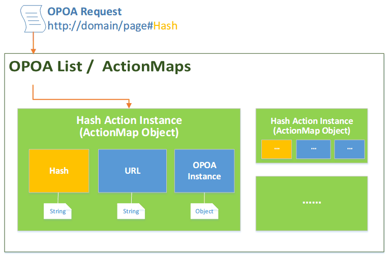

1, Use
hash trigger action instance Hash (hash value is displayed in the browser URL #hash)中文版请进入EasyOPOA
EasyOPOA is a framework OPOA program development progresses, program development for the OPOA define the concept of a complete set of standards and norms. Just a few simple configuration that is capable of fast, flexible, high-quality OPOA development program. Can help you quickly and easily build a complex like Gmail single page program.
OPOA(One Page，One Application)，Also known as Single Page Application，which is a popular use of Ajax in a single page to complete the processing of all requests for the design and development methods. Has loads fast, save traffic, efficient, facilitate the design and many other advantages.
Core OPOA development is Ajax, Ajax itself due to the characteristics of the address is not updated. Development OPOA procedures also take into account the positioning and movement forward and back two problems. Location.hash completed by positioning the main action, forward and back need help History API's.
In addition to the customer experience, search engine friendly and also very important, because the existing search engine technology and will not load content from Ajax, the contents of the different hash anchor will be ignored, so take a Web design program OPOA , because there is only one page, the search engine can not crawl into Ajax loaded content, can not be included, is not conducive to SEO, affecting OPOA practicality.These different traditions customer experience issues affecting both the user program on OPOA better use experience, but also affect the OPOA practicality.
Support action to locate and solve the problem OPOA action orientation program, to achieve save bookmarks stored, allowing users to share links collection. In the same URL can be loaded with different requests through different hash action.
Supported browser forward and back, to solve OPOA program forward and back using a browser problem (need HTML5 support, low version of the browser is compatible strategies adopted hash, the user is completely transparent).
Support search engines to crawl the content of the program and included OPOA solve OPOA program in the search engines can not crawl difficulties. Combined RSP (Rich Server Page, rich server-side page design / fat server design, and thin server-side design of the corresponding conventional OPOA) is designed to provide a more friendly SEO optimization.
Support in a number of different areas to achieve OPOA One Page page, you can use multiple independent OPOA programs in different areas of a page.
Supports the use of data parameters (routing configuration), so that the action matching more flexible RESTful style to achieve the client advanced custom action in the action.
Support action memory function, can record the action last visited achieve OPOA motor recovery.
Support AMD（Asynchronous Module Definition） specification
Compatible with various browsers (Trident, Gecko, Webkit, Presto), support for multi-platform systems and applications (PC, TabletPC, Mobile).
Programming using the framework helps to unify public issues resolved in large projects can build a more orderly, unified, standard project; development framework on the basis of certain, can develop more focused on specific energy business. Also for the future expansion and maintenance procedures are very helpful.
EasyOPOA framework allows OPOA program specific internal structure is completely transparent to developers and users, and both meet the customer need for traditional Web applications using the experience, but also the developers from the tedious confusion is no standard procedure for OPOA detached, bring good experience, taking into account the search engine friendly.
EasyOPOA adhering to the author always adhere to "More Easy, More Powerful." Pursuit of philosophy: lightweight, simple, flexible and comprehensive. Under the premise of providing a powerful comprehensive feature does not limit the user flexibility in development.
EasyOPOA framework from the global level, the depth of analysis and a new understanding of the OPOA procedures, program development for the OPOA define the concept of a complete set of standards and norms. Face of traditional OPOA development, EasyOPOA framework of disorderly orderly, of decentralized to centralized, uniform of confusion as to provide a comprehensive and flexible framework layer support for program development OPOA level.
EasyOPOA framework of traditional disorderly OPOA program development were highly abstract, the EasyOPOA each request as a "Hash action instances (Hash Action Instance) ", and the configuration associated with the request to "OPOA instance (OPOA Instance) "in the form of packages.

Hash operation examples (Hash Action Instance) is the core object EasyOPOA frame, each request is to be executed EasyOPOA a "Hash operation examples (Hash Action Instance) ", each instance of a Hash operation (Hash Action Instance) by hash, url, OPOAInstance composed of three related parts:
{
hash : [ url, OPOAInstance ]
};hash：Hash action name (also called action hash), strings. Hash is a unique identifier EasyOPOA trigger action instance in EasyOPOA, all requests are to be triggered by the hash.
url：URL defines the action to load the request string.
OPOAInstance：OPOA instance, defines the action to perform when the load request, rendering and detail the parameters of the page.
1, Use hash trigger action instance Hash (hash value is displayed in the browser URL #hash)
http://domain/home.jsp#hash2, Examples of backstage action automatically use Ajax request url
http://domain/hash3, According to opoaInstance (OPOA instance) loading and rendering
Examples OPOA (OPOA Instance) is one example of a part of the Hash operation. When describing the actions performed on the url in the process of loading and rendering methods and specific details of the request.
An instance of an object that contains eleven OPOA with Ajax requests and page rendering related properties：actions,show,hash,url,find,notfound,method,prevent,actionMaps,urlErrors,loading。
opoa instance of the default definitions：
var opoa = {
// JQuery 's DOM selector, let DOM action trigger with the ability to automatically create instances of Hash action
// Click (click) that will trigger a Hash action when the DOM element instance
// ( Can get 'Hash action instance' desired hash, url selected from the DOM )
// ( When combined with the current opoa instance , click triggered automatically created DOM 'Hash action instance' )
// For example, select menu options via the parameter , so OPOA program menu options can trigger the action instance Hash
"actions": null,
// JQuery 's DOM selector display is loaded from the request url to content
// The results returned by url / / display the action request to the selector designated area
"show": null,
// Get the DOM attribute name 'Hash action instance' of the hash value from the DOM node
// Default value : hash
"hash" : "hash",
// Get the DOM attribute name 'Hash action instance' the url value from a DOM node
// Default value : hash (url default value is also equivalent to the hash value )
"url":"hash",
// Get the data from the server , using the specified jQuery DOM find selector filter out the data of the specified region
// For example , the data returned from the server gets only the contents of a DIV
"find" : null,
// When the find parameter selector, did not find the content of the data returned from the server to display the contents of the
// Optional value "empty", "all", " custom content ", function
// "Empty" Show Empty contents
// "All" to display all of the data is loaded into the
// "Custom Content" will display the contents of custom content ( messages or pictures can be used to prompt the user )
// Function execution of the function
// Default: empty
"notfound" : "empty",
//Specific methods / / on the url Ajax request : post / get
//Post mode parameters will be automatically converted to the request url parameter to send post
// Default value : post
"method": "post",
// Prevent the default event action . If the label does not trigger when clicked href A
"prevent": true,
// Use actionMaps modify the default url specified hash corresponding to other values
// Hash action mapping `opoaInstance` default is the current object this opoa
"actionMaps": {
// "hash":"url",
// "demo":"demo.jsp"
},
// When the request url error code returned from the server when handling
// Set the value of the HTTP code and function objects , when in response to the call of the corresponding code.
"urlErrors": {
// If the action performed 404 error occurs, how to deal with
// Default: 404 load if an error occurs , the page does not have any response
404: function () {
},
// If the action performed 500 error occurs, how to deal with
// Default: 500 load if an error occurs , the page does not have any response
500: function () {
}
// Also define other states
},
// Function ajax request in different states are called, can be used for loading tips
"loading": {
// Ajax request begins
"start": function (hash, url, opoa, postData) {
},
// Ajax request is successful
"success": function (hash, url, opoa, postData) {
},
// Ajax request error
"error": function (hash, url, opoa, postData) {
},
// Ajax request ends ( regardless of success or failure will be called )
"end": function (hash, url, opoa, postData) {
}
}
};EasyOPOA.Configs global configuration objectEasyOPOA.Configs save the default values OPOA instance properties globally.
Therefore, the above OPOA instance configuration parameter global defaults , both by EasyOPOA.Configs re set the example :
// If you do not find the find the specified content data returned from the server , then displays all
EasyOPOA.Configs.notFound = "all";
// Get the url DOM attribute values
EasyOPOA.Configs.url = "href";
...OPOA Home home.jsp:
<body>
<!-- Header DIV -->
<div id="headDIV">
<h1> EasyOPOA Development Framework </h1>
<h3> realize the browser forward and back, only supported in HTML5 </h3>
</div>
<!--Menu DIV -->
<div id="menuDIV">
<!-- Increased href, point to grab the corresponding real address -->
<a class="menu" hash="demo.jsp"> examples </a>
<a class = "menu" hash = "readme.jsp" documentation </a>
<a class="menu" hash="about.jsp"> About </a>
</div>
<!-- Content DIV -->
<div id="contentDIV">
<h1> Welcome ! </h1>
</div>
<!-- Bottom DIV -->
<div id="footDIV">
© 2013 - 2014 Ray <br /> Email: <a href="mailto:inthinkcolor@gmail.com"> in.think @ gmail.com </a>
</div>
</body>Main page home.jsp structure OPOA very clear and simple, click on the menu , load content , the content is displayed in the DIV . Examples, documentation, on three menu corresponding load demo.jsp, content readme.jsp, about.jsp a (url and hash values default values. ) .
This is due to OPOA program content is loaded using Ajax , so A tab menu does not use href attribute to jump , but added a hash attribute specifies the different actions to be loaded , hash DOM object properties Hash values are used as examples of action hash and url. Similarly, as does the use of and dependency href attribute A label , the label can be used to trigger any action, such as DIV can also serve as menus.
class = "menu" can be identified which is a clickable menu , easy to use jQuery on the back of the menu items were screened using EasyOPOA framework for automatic Hahs action triggers binding.
OPOA Home home.jsp instance to CSS:
<style type="text/css">
*{Margin: 0; padding: 0;}
#headDIV { margin-top: 0; height: 100px; background-color: #008400; color:#fff; text-align: center; line-height: 50px; }
#menuDIV { margin: 20px auto; height: 50px; border-bottom: 1px solid #ddd; text-align: center; }
#menuDIV A { margin: 10 30px; color: #0084C6; text-decoration: underline; font-weight: bold; font-size: 24px; cursor: pointer;}
#menuDIV A:hover { color: #840000; text-decoration: none; font-weight: bold; font-size: 24px; cursor: pointer;}
#footDIV { padding-top: 10px; border-top: 1px solid #ddd; text-align: center; line-height: 28px;}
#footDIV A { color: #007BC3;}
</style>html content pages menu is loaded :
demo.jsp:
<h1 style="color:red"> This is DEMO. </h1>readme.jsp:
<h1 style="color:green"> This is documentation. </h1>about.jsp:
<h1 style="color:blue"> This is about us . </h1>Introducing the necessary JS files (EasyOPOA be dependent on jQuery DOM processing ) , use EasyOPOA.start (opoaList) initialize Hash action instance and started directly OPOA program .
opoaList: a collection OPOA instance ( array collection , a collection of objects ) .
EasyOPOA framework startup code:
<!-- Introducing jQuery and EasyOPOA (EasyOPOA be dependent on jQuery DOM processing ) -->
<script type="text/javascript" src="js/jquery-1.10.2.min.js"> </script>
<script type="text/javascript" src="js/easy.opoa.min.js"> </script>
<script type="text/javascript">
/ Define opoa instance
var opoa={
// Trigger action Hash instance DOM element
"actions":"#menuDIV .menu",
// Display URL is loaded into the DOM element content
"show":"#contentDIV"
}
// Start OPOA, the parameters for the collection
EasyOPOA.start ([ opoa ]);
</script>OPOA instance parameters:
actions and show are the two core parameters OPOA instance.
actions: jQuery 's DOM selector, specify the instance has the ability to trigger action Hash DOM elements EasyOPOA automatically created Hash action instance. Let selector specified DOM element in the click -click when the action can be triggered Hash instance .
<a class = "menu" hash = "readme.jsp">documentation </a>Examples of default triggered action url hash value and the values are values in the current DOM element hash attribute ( depending on the value EasyOPOA.Configs.hash and EasyOPOA.Configs.href a ) of . As the code , because EasyOPOA the EasyOPOA.Configs.hash and EasyOPOA.Configs.href default is hash, then the DOM element is clicked, the action triggered hash of readme.jsp, url also to readme.jsp.
show: hash triggered action request url returned results will appear in the show rendering the specified DOM element.
Initialization code EasyOPOA and start start function , not mandatory to be executed after the page has finished loading , and without the registration page load event handler to complete the call. You can write in any position .
Requires only a few simple lines of code above , it has been realized based on EasyOPOA framework OPOA program development.
EasyOPOA design is not only very simple to use , but also to simultaneously solve two major problems OPOA program design :
Address bar bookmark storage , movement positioning
When clicking on the appropriate menu in the browser address bar will add a different hash value in the current link home.jsp Home page, representing different requests :
http://127.0.0.1:8080/opoa/home.jsp#demo.jsp
http://127.0.0.1:8080/opoa/home.jsp#readme.jsp
http://127.0.0.1:8080/opoa/home.jsp#about.jspAnd the users to store bookmarks, direct access to the hash with a link .
The different hash value after the request to add HOME HOME (#demo.jsp,#readme.jsp,#about.jsp), to complete the request to locate the different actions.
Browser forward and back ( requires HTML5 support )
EasyOPOA support the use of the browser's forward and back buttons , and traditional Web applications to provide the same customer experience for the user experience . Do not support HTML5 browsers , EasyOPOA use compatibility practices without any additional processing , completely transparent , does not affect programs.
In addition to addressing the positioning and movement forward and back issues outside of the browser , EasyOPOA frame design, but also takes into account the right of the search engines friendly solution to the traditional OPOA program content can not be crawled by search engine problems .
To solve this problem , just look at the transformation of menu links , addhrefattribute menu links to reptiles require crawling seURL (SearchEgine URL) can be.
<!-- Menu DIV =->
<div id="menuDIV">
<!-- Increased href, point to grab the corresponding real address seURL (SearchEgine URL) -->
<a class="menu" hash="demo.jsp" href="demo.jsp"> examples </a>
<a class="menu" hash="readme.jsp" href="readme.jsp"> documentation </a>
<a class="menu" hash="about.jsp" href="about.jsp"> About </a>
</div>Such a search engine to climb on the appropriate link href address to access specific content alone can crawl into the action associated with the current ( in order to allow reptiles to get relevant information , the server needs to provide the current seURL (SearchEgine URL) requests related handler returns information )
Note: href attribute defines the link to add as seUrl (SearchEngine URL, search engine crawling address ) , and will not be EasyOPOA triggered , it will not trigger a url Hash instance when the action request address. This property is only used as a search engine crawlers provide crawling pages.

Hash:
Hash is the name of the user triggers the action instance , responsible for triggering action , the executive behind the corresponding Ajax request. hash values can be displayed in the browser address bar.
Hash value as the request was demo.jsp and demo:
http://127.0.0.1:8080/opoa/home.jsp#demo.jsp
http://127.0.0.1:8080/opoa/home.jsp#demourl:
Hash instances when the action is triggered , the actual implementation of the url address behind Ajax request, does not appear in the address bar , the user can not see and know. The value and the hash value has nothing to do , but by default they match ( both get the value from the hash property of DOM ) .
By EasyOPOA.Configs.url modify the default configuration :
// Let the action url value is read from the DOM href attribute
EasyOPOA.Configs.url="href"; Note : After the above configuration, href attribute EasyOPOA framework from DOM objects get url value if the specified property can not be found or is empty in the DOM, hash action mapping configuration parameters that will be scanned to find the matching hash specify the url, or can not find, it will be the last EasyOPOA url hash value as the value.
Or via the action mapping addActionMap function configuration:
// The demo hash mapped to mydemo.jsp url
EasyOPOA.addActionMap ("demo", "mydemo.jsp", opoa);After the above configuration, the following hash when a request for the demo , the action is triggered url performed mydemo.jsp
http://127.0.0.1:8080/opoa/home.jsp # demoGenerally , url and server to crawl content seURL OPOA process customer requests show should be the same ( so the content is the same) .
Due to the use of Ajax request data , does not rely on the href attribute A label , so any element (DIV, P, ......) can be triggered by clicking Hash action instance , complete the request load . So EasyOPOA defined by the concept of hash action trigger request identification , and then use url Hash mapping list associated with the line of action inside the hash action with a request to avoid reliance on href, for example, DIV or Button when the request does not have to be action to force users to add href attribute of DIV and Button.
Meanwhile , EasyOPOA take this design allows users to trigger action hash values , url value behind Ajax requests executed , the search engine crawling seURL value of three completely unrelated (hash, url , seURL may be the same or different ) . In advanced applications and content also allows the user to load the request (url) loaded with search engines and content requests (seURL) different , more flexible personalized programs to choose from.
Href in EasyOPOA in a property can be omitted entirely , but the use of href tag in theAto specify the server load pathseURL` allows search engines to crawl the content of the program and included OPOA solve the OPOA the program can not be included in the search engine problems , combined with RSP provides more friendly SEO optimization.
To make the search engines crawl the content can be obtained at the time to more meaningful information , such as web keywords, description, etc. ...... seURL corresponding server-side pages can be taken RSP designed to provide a more user-friendly search engine optimization.
RSP: Rich Server Page, rich server-side page design/fat server design , server-side with the traditional design of the corresponding thin .
For example , the traditional design can be based OPOA demo.jsp page :
<h1 style="color: red"> This is DEMO.</h1>Convert RSP designed demo.jsp page :
<html>
<head>
<title> OPOA demo DEMO </title>
<meta http-equiv="keywords" content="easyopoa,opoa,demo,single page">
<meta http-equiv="description" content="EasyOPOA框架开发实例">
</head>
<body>
<!--Because HTML page can have only one body, wrapped in a div content -->
<div id="content">
<h1 style="color:red"> This is a demo DEMO. </h1>
</div>
<body>
</html>This will help SEO and search engines .
In RSP design, the server returns the contents of the content contains some information not directly related . Typically page titles, keywords, descriptions and other information will not have any impact load and display . However, if the information is loaded into Ajax, hope remove unwanted label items , or filter to extract the contents of the specified , can take advantage of find and notFound parameters to achieve .
find: jQuery DOM selectors to filter out data from a specified area of the obtained data server
notFound: When the find parameter selectors did not find the content of the data returned from the server , the contents of the displayed function or call. There are four possible values "empty", "all", "custom content", function. Default value : empty.
empty": Show Empty contentsall": displays all the data is loaded into theCustom Content": custom content display ( messages or pictures can be used to prompt the user )Function: the function is executedEasyOPOA.Configsmodify global find and notFound valueGlobal Review:
// Returned from the server contents , extract the contents of #content display html
EasyOPOA.Configs.find="#contentDIV";
// If find the specified #content is not found, show all content
EasyOPOA.Configs.notFound="#all";find and notFound attribute modification examples in OPOAExample 1:
// opoa instance
var opoa = {
"actions":"#menuDIV .menu",
"show":"#contentDIV",
// Returned from the server contents , extract the contents of #content display html
"find":"#content",
// If find the specified #content is not found, show all content
"notFound":"all"
}Example 2 :
// opoa instance
var opoa = {
"actions":"#menuDIV .menu",
"show":"#contentDIV",
/ / Returned from the server contents , extract the contents of #content display html
"find":"#content",
/ / If find the specified #content is not found, show all content
"notFound":function () {
console.info ("NOT FOUND CONTENT!");
}
}Common OPOA home design program has two modes :
1 . Static page ( home page content is static content , to show the contents of the written directly in the content area )
<!-- Static content DIV -->
<div id="contentDIV">
<h1> Welcome ! </h1>
</div>2 . Dynamic page ( Home need to use Ajax to load a specific request, the request returns the contents displayed in the content area )
For example , when the home is loaded request through Ajax welcome.jsp, content and welcome.jsp displayed in the content area .
Welcome.jsp:
<h1> Welcome. Welcome EasyOPOA frame ! </h1>When the user through the browser 's forward and back buttons to advance or return , in EasyOPOA will automatically trigger and load -related information and automatically displays the current hash to solve the problem of static content updates . For information on the Home Show , EasyOPOA framework recommendations when EasyOPOA program initialization, assign specific page content loading scheme according to Home mode to prevent the information can not be updated back to the home page and load .
Use EasyOPOA.homeFun parameters can be specified function static home triggered when the function is called automatically when accessing home settings, since carried home with content initialized.
For example:
EasyOPOA.homeFun = function () {
$("#contentDIV").html("<h1>Welcome！</h1>");
}Note: be static HTML content in JavaScript is an initialization operation is very tedious and bad choices. Static content can be home to hide the DIV form definition, then loaded homeFun in .
Home static content be defined :
<div id="homeStaticContent" style="display: none">
<h1>Welcome！</h1>
</div>The use of JavaScript to get the display to the content area :
EasyOPOA.homeFun=function(){
$("#contentDIV").html($("#homeStaticContent").html());
}Use EasyOPOA.homeUrl (url, opoa [, postData]) function can be defined Home corresponding url, when accessing the home page , it will automatically request and load url.
URL address to be loaded : urlopoa: the decision rendered loading instances of opoapostData: data request submitted by optional parameters (param1 = value1 & param2 = value2 ...).
For example, specify automatic loading welcome.jsp content Home Show:
EasyOPOA.home ("welcome.jsp", opoa);homeUrl request data directly from the specified url address. The use of EasyOPOA.home (hash [, postData]) function can be defined Home corresponding hash value when accessing the home page, the Hash action instance automatically be triggered.
hash: hash name of the action to be triggeredpostData: data request submitted by optional parameters (param1 = value1 & param2 = value2 ...).
For example, specify page automatically trigger action called welcome the Hash instance , loads the content is displayed :
EasyOPOA.home ("welcome"); Static Home handler EasyOPOA.hemeFun, not only load static content. Hash action can also be loaded through the contents page, registration EasyOPOA.hemeFun function, in which the call load function to load the content using hash.
// Load the URL
// OPOA.home ("readme.jsp");
// Load the action for the readme page via hash
OPOA.homeFun = function () {
OPOA.load ("readme");
};You can submit a request to the framework EasyOPOA url parameter data postData, there are two ways :
(postData option is the parameter string, such as key1 = value1 & key2 = value2)
url?postdata implementation:EasyOPOA.home ("Welcome.jsp?user=jack&role=admin", opoa);postdata parameters defined by the function realization (EasyOPOA.home ( url, opoa [, postData])):EasyOPOA.home("welcome.jsp", opoa, "user=jack&role=admin");The above two methods can be used :
EasyOPOA.home("welcome.jsp?a=1&b=2", opoa, "user=jack&role=admin");When requested url in EasyOPOA framework post submitted by default , by way of method parameters can be adjusted to submit a request .
EasyOPOA.Configs submit a request to modify the way the globalGlobal Review:
EasyOPOA.Configs.method="get";method attribute OPOA instance submit a request to modify the way the specified action The following # menuDiv menu DOM element specified actions related Hash instance , trigger action , presented in a way both get:
// opoa instance
var opoa={
"actions":"#menuDIV .menu",
"show":"#contentDIV",
//Presented in a way to get
"method":"get"
}Internally EasyOPOA framework for post request will automatically extract all the parameters in the url , and post the submission .
For example , in the post to submit the request to the following address :
welcome.jsp?user=jack&role=adminThe url in the address Ajax request is welcome.jsp, parameter user=jack&role=admin not at the request of the url, but in the post submission .
In EasyOPOA in , opoaList OPOA entity set parameters framework must be initiated . EasyOPOA.start (opoaList) function is completed by opoaList OPOA entity framework initialization EasyOPOA collection parameters.
EasyOPOA supports a variety of ways to define a collection ( array collection and a collection of objects ) :
array collection method:
// opoa instance
var opoa={
"actions":"#menuDIV .menu",
"show":"#contentDIV"
}
// ...
// Array collection opoa instance
var opoaList = [opoa, ...];
// Use opoaList start
EasyOPOA.start(opoaList);collection of by objects :
An array of ways in obtaining relevant opoa specified instances from the list defined not intuitive and easy way to define a collection of objects can specify a name for the OPOA instance different functions and roles , citing instances opoa other action would be more convenient:
// opoa instance
var opoa={
"actions":"#menuDIV .menu",
"show":"#contentDIV"
}
//....
// opoa instance object collection
var opoaList={
// For the specified opoa instance , specify a name for the menu
"menu": opoa,
//...
}
//Use opoaList start
EasyOPOA.start (opoaList);You can use the opoaList.menu instances cited opoa menu configuration.
Each instance of an action Hash (Hash Action Instance) structures are Hash action can be mapped objects as instances and actions through the same thing Action mapping object (ActionMap Object) organize and save ( because Hash action instance itself is defined by mapping object movement and storage ) .
A standard action mapping object (ActionMap Object) is structured as follows :
{
hash: [ url, opoaInstance ]
}One set of multiple hash and url can share a OPOA instance.
Action mapping object responsible hash, url, opoaInstance bind certain . Hash action to complete a three-step examples :
1,the use of hash trigger action instance Hash (hash value is displayed in the browser URL # hash)
http://domain/home.jsp#hash2,the action instance Ajax request url
http://domain/hash3,according to the opoaInstance (OPOA instance ) loading and rendering
actions attribute opoa instance using DOM selector to set the trigger DOM object , and also can automatically obtain the desired hash and url attributes from DOM to create the appropriate action to define Hash action mapping object instance . In addition , EasyOPOA also supports a variety of ways to define a more flexible configuration action mapping .
The default action to create a Hash instance hash and url DOM are the hash value of the property . This is the default configuration defined by the EasyOPOA.Configs and decisions .
// Get the DOM attribute name 'Hash action instance' of the hash value from the DOM node
// Default value : hash
"hash": "hash",
// Get the DOM attribute name 'Hash action instance' the url value from a DOM node
// Default value : hash (url default value is also equivalent to the hash value )
"url":"hash",Modify hash and url configuration allows the value hash and url values from different attributes. For example, let DOM object attributes define hash hash value , href attribute defines the url value.
<a class="menu" hash="demo" href="demo.jsp"> instance 2 </a>
<a class="menu" hash="readme" href="readme.jsp"> documentation </a>EasyOPOA.Configs.hash="hash";
EasyOPOA.Configs.url="href";var opoa={
actions:"#menuDIV .menu",
show:"#contentDIV",
hash:"hash",
url:"href"
}actionMaps attribute can modify the default url specified hash corresponding to a different value .
EasyOPOA property values based on the current hash Hash DOM to create instances of the default action , which action hash Hash values and examples are url DOM hash value of the property . Such as:
<a class="menu" hash="demo.jsp">examples</a>The default action is mapped to :
//{ hash : [url, opoaInstance] }
{"demo.jsp" : ["demo.jsp" , this]}The use of actionMaps attribute can modify the default url specified hash corresponding to a different value . Syntax:
actionMaps: {
// "hashname" : "executeurl"
"demo":"demo.jsp",
"about":"about.jsp",
//...
}Configuration:
Configure the following code will hash to demo and readme DOM element that triggered the action url Hash instance execution.
var opoa = {
// Use actionMaps modify the default url specified hash corresponding to other values
actionMaps: {
// "Hashname ": " executeurl"
"demo":"demo.jsp",
"readme":"readme.jsp"
},
actions:"#menuDIV .menu",
show:"#contentDIV"
}Test:
Defined as an instance of the action can be triggered Hash hash hyperlinks are demo and readme:
<a class="menu" hash="demo"> instance 2 </a>
<a class="menu" hash="readme"> documentation </a>Click to Example 2 , the browser address bar (hash as demo):
http://127.0.0.1:8080/opoa/home.jsp#demo
http://127.0.0.1:8080/opoa/home.jsp#readmeRequest for load (request to demo.jsp):
http://127.0.0.1:8080/opoa/demo.jsp
http://127.0.0.1:8080/opoa/readme.jspModify the default url specified hash corresponding to a different value , you must specify OPOA render specific examples related .
//hash, url, opoa
EasyOPOA.addActionMap("demo", "demo.jsp" ,opoaList.menu);
EasyOPOA.addActionMap("readme", "readme.jsp" ,opoaList.menu);AddActionMap function also supports passing parameters array list ( action mapping element can be represented using the object or array ) :
Syntax:
[
// Standard action mapping object -based
{hash: [url, opoaInstance]},
{hash: [url, opoaInstance]},
...
]Example:
EasyOPOA.addActionMap([
// Standard action mapping object -based
// {hash: [ url, opoaInstance ]}
{"demo" : [ "demo.jsp" ,opoaList.menu]},
{"readme" : [ "readme.jsp",opoaList.menu ]}
]) ;Syntax:
[
// Array-based
[hash, url, opoaInstance] ,
[hash, url, opoaInstance] ,
...
]Example:
EasyOPOA.addActionMap([
// Array-based
// [hash, url, opoaInstance]
["demo", "demo.jsp", opoaList.menu],
["readme", "readme.jsp", opoaList.menu]
]);start (opoaList [, actionMaps ]): start start function has an optional parameter actionMaps, mapping defined objects can be passed at startup .
actionMaps: action can be mapped to a standard array list object or parameter ( action mapping element can be represented using the object or array ) .
// Standard action mapping object
var actionMap={"demo":[ "demo.jsp" ,opoaList.menu]};
// Use opoaList and actionMaps start
EasyOPOA.start(opoaList,actionMap);var actionMaps=[
// Standard action mapping object -based
// {hash: [ url, opoaInstance ]}
{"demo" : [ "demo.jsp" ,opoaList.menu]},
{"readme" : [ "readme.jsp",opoaList.menu ]}
];
// Use opoaList and actionMaps start
EasyOPOA.start(opoaList,actionMap);var actionMaps2=[
// Array-based
// [hash, url, opoaInstance]
["demo", "demo.jsp", opoaList.menu],
["readme", "readme.jsp", opoaList.menu]
];
// Use opoaList and actionMaps start
EasyOPOA.start(opoaList,actionMap2);By default EasyOPOA frame starts , it will automatically get from actions attribute OPOA instance selector to select DOM elements , binding action trigger events and automatically creates a corresponding action Hash instance .
Hash action when creating an instance , the default hash and url value and the hash value DOM attribute is the same .
<a class="menu" hash="demo.jsp">examples</a>
<a class="menu" hash="readme.jsp">documentation</a>
<a class="menu" hash="about.jsp">about</a>If , in some cases , hash attribute conflicts with other elements , or want to use other attributes instead of hash property, can be modified by the following method.
EasyOPOA.Configs modify global default definition hash value of DOM attribute nameGlobal Review:
// Get the hash of the DOM attribute opoahash
EasyOPOA.Configs.hash="opoahash";hash hash value of the property changes defined instances in OPOA The following # menuDiv .menu specified DOM element , use opoahash property instead of the default hash DOM attributes:
// opoa instance
var opoa={
"actions":"#menuDIV .menu",
"show":"#contentDIV",
// Get the hash of the DOM attribute opoahash
"hash":"opoahash"
}Use opoahash attribute instead of the default hash is defined :
<a class="menu" opoahash="demo.jsp" href="demo.jsp"> examples </a>
<a class="menu" opoahash="readme.jsp" href="readme.jsp"> documentation </a>
<a class="menu" opoahash="about.jsp" href="about.jsp"> About </a>Note that in the framework of the internal EasyOPOA if hash specified property is not found, loaded href attribute as the action url hash value and the value it will try .
Sometimes users to store bookmarks or connection collection has failed or passed an invalid user undefined hash action. EasyOPOA framework calls EasyOPOA.notHash (hash) function (default is empty ) .
Below , to access a nonexistent hash action orientation mydemo:
http://127.0.0.1:8080/opoa/home.jsp#mydemoNotHash parameters can now be registered with a parameter EasyOPOA framework handler function is invalid hash value for the current user request:
EasyOPOA.notHash=function(hash){
alter ("you specify the action '"+hash+"' has failed!" ) ;
// EasyOPOA.load("welcome.jsp","");
}Note that the low version IE (6,7,8) does not support console.info (), replace the post in order to run for the alter or otherwise.
In Ajax application development, because the browser does not refresh, so the process of requesting a URL, use the text or image to be loading Loading prompt the customer experience is very important. There are also some cases when Hash action request loading the update is complete pages also need to perform new tasks or complete some content (for example, after loading, the current state of the menu to change).
EasyOPOA framework supports the definition loading process object (loadingObject) for state management, a loading handle Ajax request object contains four state registration function for processing : Request start ( start ), the request is successful ( success , before rendering the page ) , request error ( error ), requesting end ( end , regardless of success or failure will be called ) . Function when ajax request different states are called, can be used for loading tips.
Each state handler can pass four optional parameters : hash, url, opoa, postData.hash: current trigger action of hash valueurl: the current request urlopoa: opoa instancepostData: Data submitted to the server
Syntax:
// Loading process object
"loading": {
// Ajax request begins
start:function(hash,url,opoa,postData){},
// Ajax request is successful
success: function(hash,url,opoa,postData){},
// Ajax request error
error: function(hash,url,opoa,postData){},
//Ajax request ends( regardless of success or failure will be called )
end:function(hash,url,opoa,postData){}
}Tip: end state handler used to load after the completion of the request status updates menu, sub-page action to initialize and start.
On the page content DIV contentDIV define a display Loading prompt loadingDIV:
<!-- Loading Tips DIV -->
<div id="loadingDIV">
<h1>Loading ......</h1>
</div>Show LoadingDIV Ajax request at the beginning of the end of the request hide LoadingDIV.
EasyOPOA.Configs modify global default definition of loading process object :Global Review:
// ajax request begins
EasyOPOA.Configs.loading ["start"] = function(){
console.info ("Ajax request to begin ! " ) ;
}
// ajax request ends ( regardless of success or failure will be called )
EasyOPOA.Configs.loading ["end"] = function () {
console.info ("Ajax request ends ! " ) ;
}
//...Or :
EasyOPOA.Configs.loading={
// ajax request begins
"start":function(){
console.info ("Ajax request to begin ! " ) ;
$("#contentDIV").html("");
$("#loadingDIV").show();
},
// ajax request is successful
"success":function(){
console.info ("Ajax request was successful ! " ) ;
$("#loadingDIV").hide();
},
// ajax request error
"error":function(hash,url){
console.info ("Ajax request failed ...! [" + hash + ":" + url + "]");
},
// ajax request ends ( regardless of success or failure will be called )
"end":function(){
console.info ("Ajax request ends ! " ) ;
$("#loadingDIV").hide();
}
}loading attributes OPOA loading process object instance is defined as DOM: To # menuDiv menu DOM element associated with the specified action Hash instance , specify the loading process object :
// opoa instance
var opoa={
"actions":"#menuDIV .menu",
"show":"#contentDIV",
// loading process object :
"loading":{
// ajax request begins
"start":function(){
$("#loadingDIV").show();
},
// ajax request is successful
"success":function(){
$("#loadingDIV").hide();
},
// ajax request ends ( regardless of success or failure will be called )
"end":function(){
$("#loadingDIV").hide();
}
}
} Use addActionLoadings (hashs, loadingObject) set the loading process object for the specified hashs.
hashs: a single hash value can also be an array of hash value
Single hash value:
// For the hash value of the Action demo.jsp loading process object instance of the specified action
EasyOPOA.addActionLoadings ("demo.jsp",{
// ajax request begins
"start":function(){
$("#loadingDIV").show();
},
// ajax request is successful
"success":function(){
$("#loadingDIV").hide();
},
// ajax request ends ( regardless of success or failure will be called )
"end":function(){
$("#loadingDIV").hide();
}
});hash value of the array:
//For the hash value of the Action about.jsp and readme.jsp loading process object instance of the specified action
EasyOPOA.addActionLoadings (["about.jsp", "readme.jsp"], {
// ajax request begins
"start":function(){
$("#loadingDIV").show();
}
// ajax request is successful
"success":function(){
$("#loadingDIV").hide();
},
// ajax request ends ( regardless of success or failure will be called )
"end":function(){
$("#loadingDIV").hide();
}
});In actual OPOA development and use, and not simply load request , obtain content from the request and displayed it. Request the return of the loaded content often may also contain a new trigger EasyOPOA action DOM object, you need to initialize an instance of these actions through the start Hash function .
In general, these initialization code can be written directly in the page ( eg demo.jsp) requests here:
// Finish initialization new action in demo.jsp
<script type="text/javascript">
// opoa instance
var opoa={
"actions":"#show A",
"show":"#contentDIV"
};
// Start
EasyOPOA.start([opoa]);
</script>Note : Because the home side hava bean introduced easyopoa.js, so no need to repeat the request url page framework document and other introduced easyopoa.js been introduced in Home page dependencies ( in IE this behavior will lead to an error ) . In fact, this program also reflects the OPOA efficient and easy to maintain.
If you do not want to deal with code EasyOPOA framework distributed to each request pages ( such as the need to focus on the Home page or a single JS file unified maintenance management ) . May also be implemented in the state handler loading object.
After loading end , by judging hash parameters, the corresponding initial start :
OPOA.Configs.loading={
// ajax request begins
"start":function(){
$("#contentDIV").html("");
$("#loadingDIV").show();
},
// ajax request is successful
"success":function(){
$("#loadingDIV").hide();
},
"error":function(){
$("#contentDIV").html("<h2>Sorry, an error occurred , please try again later request!</h2>");
},
// ajax request ends ( regardless of success or failure will be called )
"end":function(hash){
$("#loadingDIV").hide();
// After finished loading a request to determine hash, Hash action on the request page instance initialization
if(hash="demo"){
// opoa instance
var opoa={
"actions":"#show A",
"show":"#contentDIV"
};
// Initialize the requested action page, start
EasyOPOA.start([opoa]);
}
}
};In addition to the Loading friendly tips , the server may generate an error in the Ajax request process, for different errors should also be given the necessary time to the user prompts . For example, 404 on behalf of the request is not found, server error 500 delegates ......
Each request will be submitted by the HTTP server returns the corresponding numerical code , EasyOPOA use urlErrors representatives HTTP response code object (urlErrors Object), different support when returning HTTP code , call the appropriate function response.
EasyOPOA.Configs modify global default object defined HTTP response code :Global Review:
// 404 HTTP code
EasyOPOA.Configs.urlErrors[404] = function() {
console.info (" does not exist ! " );
};
// 500 HTTP code
EasyOPOA.Configs.urlErrors[500] = function() {
console.info (" Server Error ! " );
};
//...Or :
EasyOPOA.Configs.urlErrors={
// 404 HTTP code
404:function(){
console.info (" does not exist ! " ) ;
},
// 500 HTTP code
500:function(){
console.info (" Server Error ! ");
}
}urlErrors attributes OPOA instance as DOM object defined HTTP response code : To # menuDiv menu DOM element associated with the specified action Hash instance , the code specifies the HTTP response function :
// opoa instance
var opoa={
"actions":"#menuDIV .menu",
"show":"#contentDIV",
// Use urlErrors attribute defines HTTP response object code
"urlErrors":{
// 404 HTTP code
404:function(){
console.info ("does not exist !");
},
// 500 HTTP code
500:function(){
console.info (" Server Error ! " ) ;
}
}
} Use addActionUrlErrors (hashs, urlErrorsObject) set the HTTP response code for the specified object hashs.
hashs: a single hash value can also be an array of hash value
Single hash value :
// Instance Specified HTTP response object code for the hash value demo.jsp of Action Action
EasyOPOA.addActionUrlErrors("demo.jsp",{
// 404 HTTP code
404:function () {
console.info ("Donation page not found!");
},
// 500 HTTP code
500:function(){}
} );hash value of the array:
// Values demo.jsp and about.jsp of Action action response object instance of the specified HTTP code for the hash
EasyOPOA.addActionUrlErrors(["demo.jsp","about.jsp"],{
// 404 HTTP code
404:function(){
console.info("Donation page not found!");
},
// 500 HTTP code
500:function(){}
} );load function allows control over the actions triggered by the developers to manage .
Under normal circumstances EasyOPOA default management framework to automatically trigger actions , before the action is triggered by clicking on the page 's DOM element triggered. If you want to manually trigger a defined Hash action instance , use EasyOPOA.load function .
EasyOPOA.load (hash [, postData]): Manually trigger the specified hash action , postData submit a request for the optional parameter data (key1 = value1 & key2 = value2).
Note : load function must be called after the start function to start ( for instance initialization is complete Hash action ) to be used in EasyOPOA framework.
EasyOPOA.load("readme.jsp"); In OPOA program to modify, add , will need to submit the form data is loaded , this time to manually submit .
Using jQuery 's $ ('# editForm') serialize ()) to specify the content of the form can be obtained :
<form id="editForm">
<input type="hidden" name="id" value="" />
<input type="text" name="title" value="" />
<textarea name="content" ></textarea>
<input type="button" value="Add" onclick="OPOA.load('doEdit',$('#editForm').serialize())" />
</form>Configuration mapping doEdit action submitted to doEdit.jsp:
EasyOPOA.addActionMap("doEdit","do/doEdit.jsp",opoa);Before deleting data often require confirmation prompt , use the load after the user confirms trigger action ( due EasyOPOA framework Hash DOM element to trigger automatic registration click event , so do not use actions in opoa automatically initializes the instance DOM )
<a onclick="if(confirm('You sure you want to delete it?')){EasyOPOA.load('delete/1')}return false;" href="do/doDelete.jsp?id=1">deleted</a>The traditional hash, hash value as the default request url. If the url hash and requests inconsistent, you need to use addActionMap hash function specified separately for each specific request url.
For example:
<a class="menu" href="demo">examples</a>
// ...
EasyOPOA.addActionMap("demo", "demo.jsp" ,opoaList.menu);
// ...However, if the hash is generated dynamically and is inconsistent url , url request parameters need to get the data submitted from the hash value , then by this method is very feasible :
// Define a hash (demo/version/logo )
<a class="menu" hash="demo/v1/123">instance A </a>
<a class="menu" hash="demo/v2/456">instance A </a>
// ...
// hash obtain parameter values , convert url (demo.jsp?v=release &id=identity)
demo.jsp?v=v1&id=123
demo.jsp?v=v2&id=456
// ...
EasyOPOA only provides a load engine OPOA program . Also provides flexible configuration actions , support the use of data parameters in the action ( routing configuration ) , so that the action is more flexible matching in style RESTful client implementation senior custom action .
When using the hash action with data parameters , simply specify a placeholder in the hash action configuration, you can reference parameter values corresponding placeholders in the url . hash action configuration supports two types of placeholders:
:param: URL placeholder component parameters , a colon ( :) at the beginning , matching slash / between .
*splat： (*) at the beginning of a wildcard placeholder asterisk matches multiple URL component that supports matching slash / .
For example , is defined as follows RESTful style hash action.
<!-- demo/:version/:id -->
<a class="menu" hash="demo/v1/123">instance A</a>
<a class="menu" hash="demo/v1/456">instance B</a>
<a class="menu" hash="demo/v2/123">instance C</a>Wildcard URL mappings defined by parameters (parameter placeholders can match URL components slash / between ) .
//hash,url,opoa
EasyOPOA.addActionMap("demo/:version/:id", "demo.jsp?v={version}&id={id}" ,opoaList.menu); Use parameter placeholders in the hash :param defines the parameters :version and id.
Use the URL {param} to refer to the corresponding parameter values : {version}, {id} values are quoted version and id placeholder hash defined .
When the hash action trigger , extract parameters from the hash , the url convert .
demo.jsp?v=v1&id=123
demo.jsp?v=v1&id=456
demo.jsp?v=v2&id=123For example , is defined as follows RESTful style hash action.
<!-- about/*info -->
<a class="menu" href="about/author/2">About the author 2 </a>
<a class="menu" href="about/company">About Company</a>URL parameters defined by the wildcard mapping ( to match the slash / ) .
EasyOPOA.addActionMap("about/*info", "about.jsp?info={info}" ,opoaList.menu);When the hash action trigger , extract parameters from the hash , the url convert .
about.jsp?info=author/2
about.jsp?info=company In addition to using the URL {param} to get the value of the specified parameter , EasyOPOA framework also supports the use of indexing {index} get the value of the parameter.
EasyOPOA.addActionMap("demo/:version/:id", "demo.jsp?v={0}&id={1}" ,opoaList.menu);
EasyOPOA.addActionMap("readme/*info", "about.jsp?info={0}" ,opoaList.menu);In OPOA application, if requested within the sub-page to define the mapping object and initializes , then only when the request is triggered, there are parameters defined action mapping to initialize . So, this will lead to a child if the page is loaded directly inside the action requested by the browser's action can not match , no corresponding action mapping , perform notFound.
Therefore, in order to avoid such a situation , you can map the sub- page action with wildcard parameter is defined to the Home page, so that when the page is loaded with sub-pages can be scanned into the match action, and execute the corresponding load .
home.jsp
// Register Home page there reference Hash action
EasyOPOA.addActionMap("list/:pageNo", "list.jsp?pageNo={pageNo}" ,opoa);
// Register the child has a reference page Hash action
EasyOPOA.addActionMap("show/:id", "show.jsp?id={id}" ,opoa);
EasyOPOA.addActionMap("edit/:id", "edit.jsp?id={id}" ,opoa);
EasyOPOA.addActionMap("delete/:id", "delete.jsp?id={id}" ,opoa);Average DOM object in the default URL specified values have higher priority than the Senate Hash action specified URL. EasyOPOA internal frame Find URL in the following order:
(specified by EasyOPOA.Configs.url) DOM object from the properties acquired in url value to be loaded. If does not exist or is empty, then go to Step 2
scans have all defined parameters Hash action, get url value specified for the corresponding hash values. If not, go to step 3
as the hash value url value
When a user accesses OPOA program directly home page , such as when http://127.0.0.1:8080/opoa/home.jsp, generally show the same load each time the default home page content.
If you want when the user next visit home.jsp home , to show the contents of their last last action performed by the user , to provide users save and restore the state 's action . Open action can locate memory function in EasyOPOA framework.
EasyOPOA framework action memory function is enabled by default , just add dependent jquery.cookie.js and json2.js function can be realized .
<!--jquery.cookie and json2 optional , if you want to open the final movement positioning memory function , you need to introduce -->
<script type="text/javascript" src="js/jquery.cookie.js"></script>
<script type="text/javascript" src="js/json2.js"></script>If you need to disable the action memory function, remove js files or cookieLast set to false .
EasyOPOA.cookieLast=false;Use EasyOPOA and OPOA global variables can be referenced EasyOPOA frame object .
EasyOPOA.noConflict ([boolean]): You can control EasyOPOA and OPOA release the results of the use of the returned object references EasyOPOA framework to prevent conflicts with other objects or OPOA 's called EasyOPOA .
Control over the operation of the function of the variable OPOA transfer to first realize that its library .
var $OPOA=EasyOPOA.noConflict();Run this function will control variable OPOA and EasyOPOA the transfer to the first library that implements it .
var $OPOA=EasyOPOA.noConflict(true);prevent parameters generally do not modify the parameter is true, the action is triggered when the DOM will cancel the default action .
For example: cancel the default jump clicking on hyperlinks href tag .
If you need to modify , through global settings :
EasyOPOA.Configs.prevent=false;Or opoa instance settings :
//opoa instance
var opoa={
"actions":"#menuDIV .menu",
"show":"#contentDIV",
prevent:false;
}EasyOPOA support for modular programming, and support for AMD (Asynchronous Module Definition, asynchronous definition module) specification.
EasyOPOA rely jQuery, but it is not absolutely dependent on jquery.cookie and json2 (only when action is needed and memory needed).
jQuery and jquery.cookie inside have provided support for the AMD specification, but json2 also did not support any specification. So for json2 can introduce, or to transform according to the corresponding module definition specification.
home.jsp:
<!-- Since json2 not support AMD specification, introduced directly (also self-transformation, specifically refer to AMD specifications) -->
<script type="text/javascript" src="js/json2.js"></script>
<!-- Load master file module (Entry Module) -->
<script src="amd/require.min.js" data-main="js/main_amd"></script>js/main_amd.js：
//Jquery and jqueryCookie path configuration
require.config({
paths:{
"jquery":"jquery-1.10.2.min",
"jqueryCookie":"jquery.cookie"
}
});
//Introduction of dependence, load module (jqueryCookie optional module)
//EasyOPOA engine has been cited internal documents dependence jquery
//So if you do not use jquery in the startup module, you can not introduce jquery
require(['easy.opoa','jquery','jqueryCookie'],function(EasyOPOA,$){
//……
}WebRoot file structure：
+amd
require.min.js
+js
main_amd.js
jquery-1.10.2.min.js
jquery.cookie.js
json2.jsBackBoneJS be OPOA programming is also a favorable technology. Use EasyOPOA and BackBoneJS can complete OPOA design process.
From a design point:EasyOPOA focus on to build OPOA systems(System); while BackBoneJS focused on using the front-end MVC to build a module in the system(Module)
From a technical point:EasyOPOA OPOA is a purely procedural framework for building; while BackboneJS is essentially a front-end JS MVC framework, rather than OPOA framework.
Focus on providing a JavaScript engine side MVC framework. Server-side data is given only model, the client controls all business, views and updates are rendered by the client BackboneJS done with MVC components, systems rely on JS achieve full programming capabilities.
Advantages:
BackboneJS is returned from the server-side model data, with no view, on the client side rendering by JS, so use BackboneJS can reduce server-side design, only the output of the model data to the server through the client to control the MVC code, client rendering view, reduce traffic and provide better performance....
Inadequate:
Increased the difficulty of front-end development, you need a professional front-end personnel, and also requires the developer must have a high level of system design JavaScript
Is not conducive to search engine optimization, you can not grab meaningful information from the server
Not suitable for business, modules, view the OPOA program to build complex types, complexity has increased the difficulty of enhancing development program with OPOA
EasyOPOA to OPOA program provides engine and implement the design. More focused on server-side MVC, with Easy target, so developers do not need to learn the back-end engine and front-end MVC implementation specification, development and use as much as possible to reduce the difficulty of the front.
Advantages:
EasyOPOA more focused on server-side MVC technology to reduce the cost and difficulty of learning development, only a limited number of master EasyOPOA API can be
To solve the problem of search engine crawling, use RSP designed to carry out a targeted search engine optimization
Can use its own master server-side technology to solve problems rather than relying on the superb JS programming capacity, reduce the difficulty of development OPOA
OPOA service module, the view type of complexity does not increase the complexity and increase the difficulty of building, the level of technical difficulty is not growing
Abstract Specification and simple, even if you are a novice JS and OPOA, but also to build a consistent, reliable and robust program
Inadequate:
Because the view is to rely on server-side rendering and return, so the traffic flow is slightly larger than BackboneJS. (EasyOPOA is to get to render the page (ie, view results) directly from the server; while BackboneJS is to obtain data on the client side rendering view from the server)
It can be said EasyOPOA is designed to solve complex problems OPOA program will OPOA unraveling , to simplify , to provide a framework to support complex business development program designed to reduce the difficulty , allowing developers to more easily develop . Even if you are a novice JS in EasyOPOA framework can help rapidly develop robust , high-quality OPOA program . Consistent with its More Easy, More Powerful concept.
EasyOPOA uphold a business -friendly , developer-friendly features. By comparison, Backbone, and developers to learn from business point of view, a bit steep , but not equivalent to grasp the MVC components in the design of complex OPOA system can develop quality depends on the level of developers.
Learn BackboneJS learning curve of traditional developers higher , there is a strong need for JS skills, while the front-end MVC need to understand the characteristics and different, mainly master specification for each module BackboneJS MVC development defined roles and define methods , as well as supporting a huge number of front-end API. The final program quality is also on the front end of the program with a personal understanding of the system design, and JS programming application levels....
Taken from the design and realization of the objectives are not the same, the two decided to completely replace the relationship does not exist, it is not mutually exclusive.
Instead, both with the use of the program may also allow OPOA become stronger, you can use in the design of the overall system EasyOPOA build and control, as large projects OPOA driving engine; while BackboneJS complex system of partial completion of the module function, play MVC front-end advantages and charm.
If you have more comments, suggestions or ideas , please contact me.
Contact , feedback, customization, training Email: inthinkcolor@gmail.com